오사카 우메다(이비스 호텔) ➔ 교토 왕복
초밀착 실전 가이드
기온·청수사·니시키시장·아라시야마·후시미이나리까지 한 번에 다녀오실 수 있게 정리했습니다!
숙소인 이비스 오사카 우메다는 한큐 오사카우메다역과 JR 오사카역 모두 걸어서 5~6분 거리라 교토 당일치기에 최고의 위치입니다! 가시는 첫 목적지에 맞춰 아래 표에서 고르세요.
| 구분 | 방법 1: 한큐전철 교토선 ⭐ 부모님 추천 1순위 |
방법 2: JR 교토선 (신쾌속) ⚡ 교토역·여우신사 추천 |
|---|---|---|
| 출발역 (숙소 도보 5분) | 한큐 오사카우메다역 (1·2·3호 선) | JR 오사카역 (7·8·9·10번 승강장) |
| 도착역 (교토) | 교토 가와라마치역 (기온·청수사 시내 중심) 또는 한큐 아라시야마역 (가쓰라역 환승) |
JR 교토역 (교토타워 앞) ➔ 후시미이나리(여우신사) 환승 최적 |
| 소요 시간 | 약 43분 (특급 特急 기준) | 약 29분 (신쾌속 新快速 기준) |
| 편도 요금 (성인 1인) | 410엔 (왕복 820엔 · 패스보다 저렴!) ※ 4호차 지정석(PRiVACE)은 +500엔 |
580엔 (왕복 1,160엔) |
| 갤럭시(안드로이드) 결제 | ⭕ 실물 이코카(ICOCA) 가능 ⭕ 트래블카드(신용카드) 터치결제 가능! |
⭕ 실물 이코카(ICOCA) 가능 ❌ 신용카드 터치결제 불가! (또는 표 구매) |
| 착석 편의성 | 최상 (시발역 + +500엔 유료 지정석 4호차 운영) | 보통 (중간 정차역이라 승객이 많음) |
• ① 기온거리 · 청수사(기요미즈데라) · 니시키시장 · 아라시야마(대나무숲)에 가신다면?
👉 무조건 [방법 1: 한큐전철 교토선 (410엔)]을 타세요! 교토의 명동 격인 가와라마치역 한복판에 바로 내려줍니다. (청수사는 가와라마치역에서 택시 타시면 1,000~1,300엔에 언덕 입구까지 편하게 갑니다!)
• ② 교토역 · 교토타워 · 후시미이나리 타이샤(여우신사)에 먼저 가신다면?
👉 [방법 2: JR 교토선 신쾌속 (580엔)]을 타세요! 29분 만에 교토역에 도착하며, 바로 JR 나라선으로 갈아타서 5분이면 여우신사(이나리역) 코앞에 도착합니다.
- 지상으로 걸어갈 때 (날씨 좋을 때 추천): 호텔 1층 정문에서 오른쪽으로 나와 큰길 신호등 하나를 건넌 뒤, 빨간 대관람차가 있는 HEP FIVE(헵파이브) 옆 골목 아케이드로 직진하면 바로 한큐 오사카우메다역입니다!
- 지하상가(화이티 우메다)로 갈 때: 호텔 지하 1층 연결문(7-72번 출구)으로 나와 천장의 阪急電車 Hankyu Line 또는 JR線 JR Line 화살표만 따라 걸으시면 됩니다.
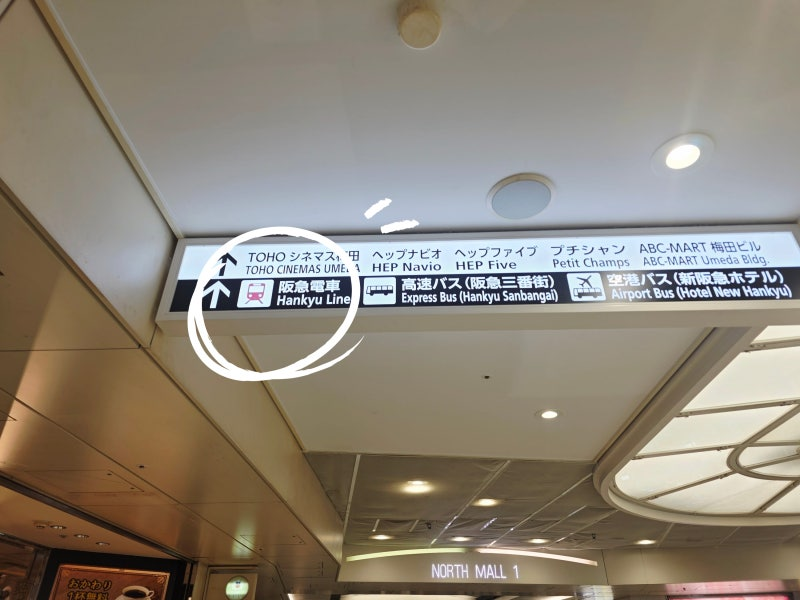

- ① 실물 이코카(ICOCA) 교통카드 (가장 만능 ⭐): 한큐전철·JR·오사카 지하철·교토 시내버스·편의점까지 일본 모든 대중교통 100% 통과! 개찰구의 파란색 IC 패드에 톡 찍으세요.
- ② 한국 트래블카드 / 비자·마스터 신용카드 터치 (한큐전철 ⭕ / JR ❌): 한큐전철과 오사카 지하철은 한국 트래블월렛·트래블로그·신용카드를 그대로 찍고 탈 수 있습니다! 단, 와이파이 모양(컨택리스) 전용 은색 단말기가 달린 개찰구(보통 맨 끝 쪽 1~2개)에 찍으셔야 합니다.


기온거리 · 청수사 · 니시키시장(교토 가와라마치역)이나 아라시야마 대나무숲(한큐 아라시야마역)에 가실 때 가장 편하고 저렴한(편도 410엔) 노선입니다.
- 이코카(ICOCA) 또는 트래블카드가 있으시면 바로 개찰구를 찍고 들어가세요. (종이표를 사신다면 개찰구 옆 매표기에서 [한국어] ➔ [410엔] 표를 뽑으시면 됩니다.)
- 한큐 우메다역에는 선로가 1번부터 9번까지 나란히 있는데, 교토 가는 열차는 무조건 맨 오른쪽 초록색 간판인 ① ② ③ 호 선 (京都河原町 교토 가와라마치 방면)입니다! (고베·다카라즈카 선과 헷갈리지 않게 1·2·3번만 기억하세요!)
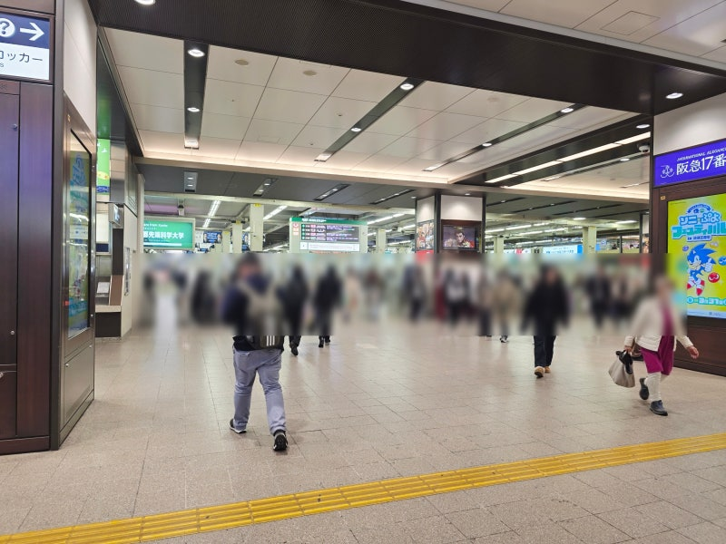
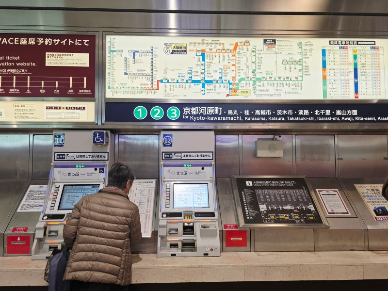

- 한큐 교토선은 특급(特急) · 준특급(準特急) · 급행 · 보통 열차가 모두 같은 410엔입니다!
- 반드시 빨간색 글씨로 적힌 特急 Limited Exp. (특급) 또는 準特急 (준특급) 京都河原町 (Kyoto-kawaramachi) 행 열차를 타세요. (보통 1번 승강장에서 10분마다 출발하며, 43분 만에 교토 종점까지 가장 빠르게 갑니다!)
- 우메다역이 출발 시발역이므로, 서두르지 마시고 다음 특급 열차 줄에 미리 서 계시면 일반 칸(1~3호차, 5~8호차)에서도 두 분이 나란히 앉아가실 수 있습니다.


- 💺 4호차 유료 좌석 지정 서비스 [PRiVACE (프리베이스)] (+500엔): 한큐 특급열차의 정중앙인 4호차(문 옆에 금색 P 로고)는 전 좌석 2×1 배열의 고급 리클라이닝 지정석입니다. 기본 운임(410엔) 외에 1인당 500엔(약 4,500원)만 추가하면 콘센트·무료 와이파이가 있는 푹신한 단독 좌석에 앉아 가실 수 있습니다. (스마트폰 웹사이트에서 회원가입 없이 신용카드로 즉시 예매하거나, 빈자리가 있으면 4호차 탑승 후 승무원에게 현금/교통카드로 500엔 결제도 가능합니다!)
- 🍁 주말·공휴일 보너스 관광열차 [교트레인 가라쿠 (京とれいん 雅洛)] (추가요금 0원!): 토·일·공휴일(하루 왕복 4~6회, 우메다 3번 승강장 출발)에는 열차 내부를 교토 전통 정원과 다다미 좌석으로 꾸민 명물 관광열차 교트레인 가라쿠가 운행합니다. 예약이나 추가 요금 없이 일반 요금 410엔 그대로 타실 수 있으니 주말에 시간이 맞으면 꼭 타보세요!
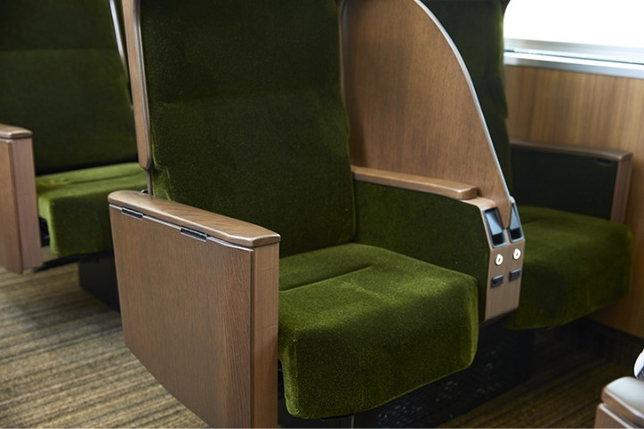
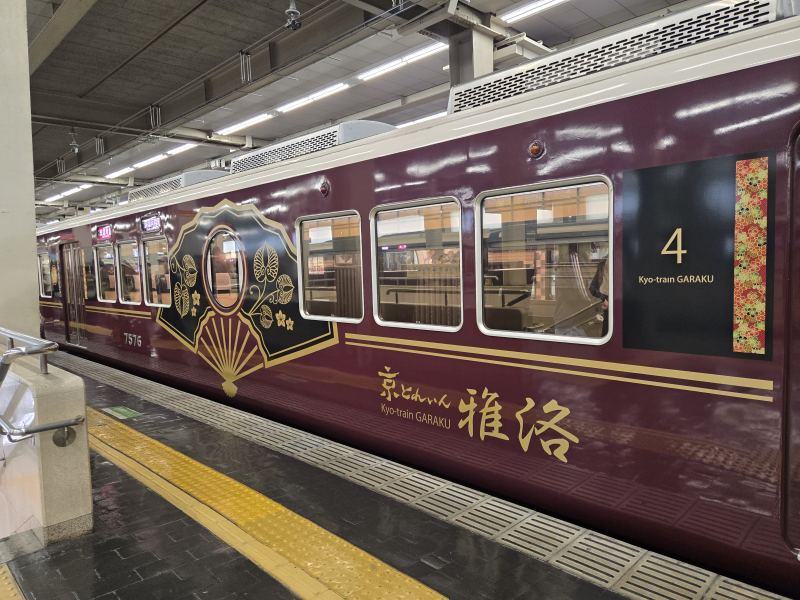

- 기온거리 · 가모가와강 · 야사카신사 방면: 개찰구를 나와 [1A 또는 1B 출구]로 올라가 다리(시조대교)만 건너면 바로 교토 전통 거리인 기온(祇園)입니다. (도보 5분)
- 니시키시장(교토의 부엌) 방면: 지하도를 따라 서쪽(가라스마 방면) 출구로 나가면 도보 5분 거리입니다.
- 🚕 부모님 무릎 보호 최고 꿀팁 (청수사 택시 이동): 교토 시내버스는 관광객이 너무 많아 부모님께서 서서 가시기 힘듭니다. 가와라마치역 지상으로 나와 택시를 타시고 기사님께 "기요미즈데라, 고조자카 오네가이시마스(청수사 입구 부탁합니다)"라고 하시면 약 10분, 요금 1,000~1,300엔(약 1만 원)에 청수사 오르막길 입구까지 아주 편하게 모셔다줍니다!
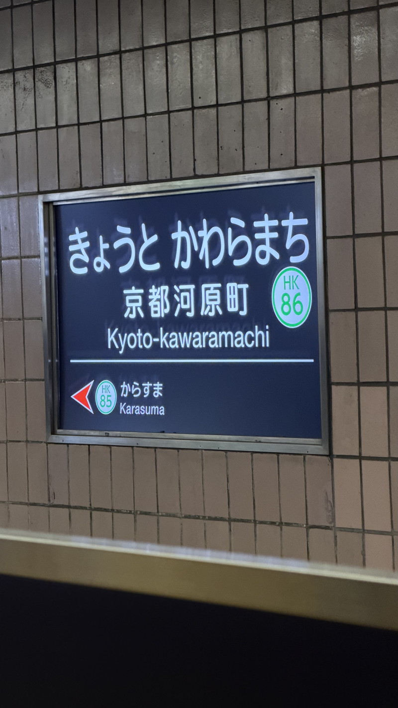
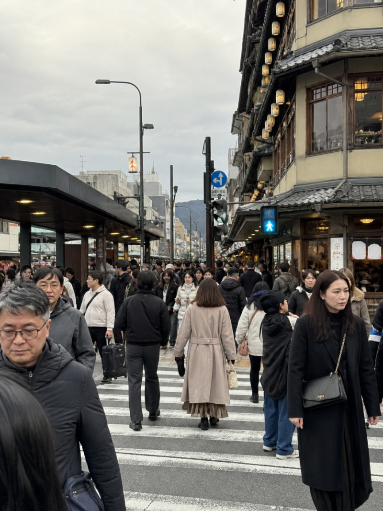
- ① 가쓰라역(桂, Katsura) 하차: 우메다에서 한큐 특급열차를 타고 약 35분 달리면 종점 2정거장 전인 桂 (가쓰라역, HK-81)에 정차합니다. 여기서 내리세요.
- ② 1호 선(C 플랫폼) 아라시야마선 환승: 절대 개찰구 밖으로 나가지 마시고, 에스컬레이터/엘리베이터를 타고 초록색 동그라미 ① Ⓒ 嵐山方面 (for Arashiyama) 표지판을 따라 1C 승강장으로 내려가세요.
- ③ 한큐 아라시야마역 도착 (3정거장, 7분): 1C 승강장에 서 있는 열차는 무조건 아라시야마행입니다! 타고 7분(3정거장)만 가면 종점인 한큐 아라시야마역에 도착하며, 역에서 걸어서 도게츠교 다리를 건너면 바로 대나무숲입니다.
- 🔄 저녁에 우메다로 돌아올 때: 한큐 아라시야마역에서 열차를 타고 가쓰라역에 내린 뒤, 파란색 간판 [④ ⑤ 大阪梅田 (for Osaka-umeda)] 승강장으로 건너가 특급열차를 타시면 우메다까지 한 번에 돌아옵니다!


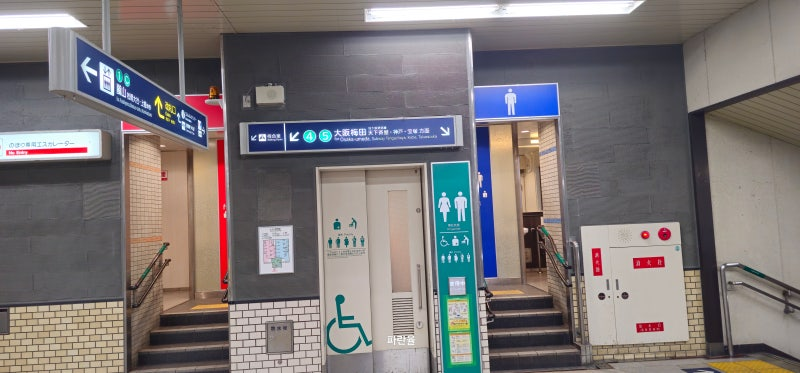
교토역 · 교토타워를 구경하시거나 후시미이나리 타이샤(여우신사)를 첫 코스로 가실 때는 JR 오사카역에서 출발하는 JR 교토선 신쾌속(新快速, 29분 소요, 580엔)이 가장 빠릅니다!
• 한큐전철과 달리 JR 서일본 개찰구는 트래블월렛·비자/마스터 카드 터치 결제를 지원하지 않습니다.
• 반드시 ① 실물 이코카(ICOCA) 교통카드를 파란색 IC 리더기에 찍으시거나, ② 개찰구 옆 JR 매표기(한국어 지원)에서 580엔 종이 승차권을 뽑아서 투입구에 넣으셔야 합니다!
- 개찰구를 통과한 뒤 천장의 파란색 A JR京都線 (JR Kyoto Line) 7 · 8 또는 9 · 10 (新大阪·高槻·京都 方面 for Shin-Osaka, Takatsuki, Kyoto) 에스컬레이터를 타고 승강장으로 올라가세요.
- (참고: 아침 출퇴근 시간대 외의 낮 시간에는 주로 7·8번 승강장에서 출발하며, 아침 시간대에는 9·10번에서 출발하기도 하니 전광판의 승강장 번호를 확인하세요!)


- 무조건 파란색 新快速 Special Rapid (신쾌속) 탑승: 신쾌속을 타면 신오사카 ➔ 다카쓰키 ➔ 교토 딱 3정거장, 29분 만에 주파합니다! (주의: 노란색 '쾌속'이나 흰색 '보통'을 타면 정차역이 많아 45~50분 걸립니다.)
- ⛩️ 후시미이나리 타이샤(여우신사) 바로 가는 법: JR 교토역에 내린 뒤 개찰구 밖으로 나가지 마시고, 구내 통로를 따라 갈색 간판 D JR奈良線 (JR 나라선 · 8·9·10번 승강장)으로 이동해 보통(Local) 열차를 타세요! 딱 2정거장(5분, +150엔)만 가면 여우신사 바로 코앞인 JR 이나리역(稲荷駅)에 도착합니다.
- 🔄 저녁에 JR 교토역에서 오사카(우메다)로 돌아올 때: JR 교토역 개찰구로 들어와 파란색 간판 4 · 5번 승강장 (JR京都線 新大阪·大阪·三ノ宮 方面)으로 내려가 파란색 [新快速 (신쾌속) 오사카·히메지행]을 타시면 29분 만에 JR 오사카역으로 돌아옵니다!
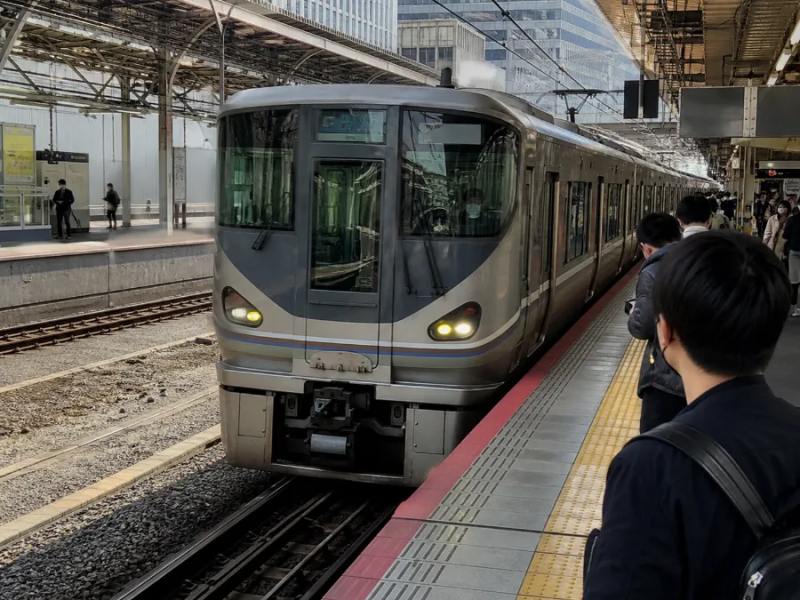
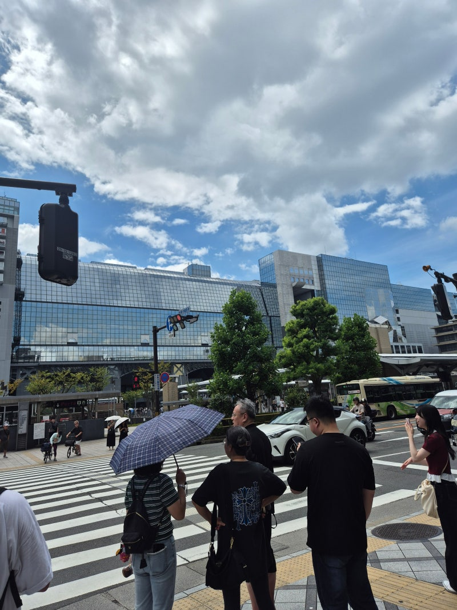
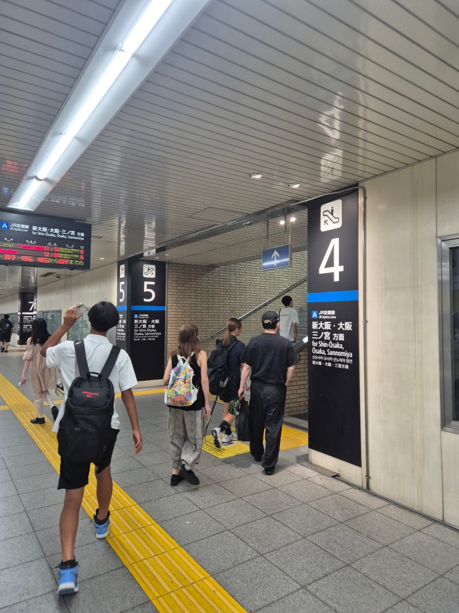
교토 여행의 하이라이트인 청수사(기요미즈데라 · 清水寺)는 ① 교토 핵심 명소를 구경하며 설렁설렁 걸어 올라가는 산책 코스와 ② 택시·버스로 올라간 뒤 내리막길로 걸어 내려오는 코스 모두 매력이 뛰어납니다! 당일 날씨와 부모님 컨디션에 맞춰 아래 3가지 방법 중 골라보세요.
• 방법 A [걸어서 산책하며 가는 법 🚶 · 교토 감성 100% 왕도 코스]: 한큐 교토 가와라마치역(1A·1B 출구)에서 출발해 시조대교(가모가와강) ➔ 기온거리 ➔ 야사카신사 ➔ 호칸지(야사카의 탑) ➔ 니넨자카·산넨자카 ➔ 청수사까지 구경하며 걸어가는 코스! (순수 도보 약 30~35분 / 만원 버스 대기 없이 교토 최고 명소를 일직선으로 모두 만납니다!)
• 방법 B [택시로 오르막길 패스 🚕 · 부모님 무릎 보호 1순위]: 가와라마치역(약 10분, 1,200~1,500엔) 또는 JR 교토역(약 15분, 1,500~1,800엔)에서 택시로 "차완자카(茶わん坂) 상단"까지 올라가 정문 코앞에서 내린 뒤, 구경 후 내리막길로 걸어 내려오는 코스!
• 방법 C [가성비 시내버스 이동 🚌 · 편도 230엔]: 가와라마치역 6번 출구 앞 [207번 버스] 또는 JR 교토역 D2 승강장 [206·86번 버스]를 타고 [기요미즈미치]·[고조자카] 정류장에서 내려 언덕길을 10~15분 걸어 올라가는 코스!
- ① [출발 · 5분] 한큐 교토 가와라마치역 1A 또는 1B 출구 ➔ 시조대교(四条大橋) 건너기: 개찰구를 나와 1A·1B 출구로 올라오면 바로 눈앞에 교토의 상징인 가모가와강(鴨川)이 펼쳐집니다. 시원한 강바람을 맞으며 시조대교를 건너세요!
- ② [기온 산책 · 8분] 기온 거리(四条通) 직진 ➔ 붉은 정문 야사카신사(八坂神社) 도착: 다리를 건너 양옆으로 전통 상점과 화과자 가게가 늘어선 기온 거리를 따라 똑바로 직진하면, 길 정면 끝에 화려한 주홍빛 누문인 야사카신사 서문이 나타납니다. (무료 개방 · 24시간 운영)
- ③ [전통 돌담길 · 10분] 야사카신사 남문 통과 ➔ 네네노미치 ➔ 호칸지(야사카의 탑): 야사카신사 안으로 들어가 본전을 둘러보신 뒤 오른쪽(남문)으로 나와 평평하고 고즈넉한 돌담길인 네네노미치(ねねの道)를 따라 걸어가면, 전통 가옥 사이로 우뚝 솟은 5층 목탑인 호칸지(야사카의 탑) 포토존이 나옵니다!
- ④ [전통 언덕길 · 12분] 니넨자카(다다미 스타벅스) ➔ 산넨자카 ➔ 청수사 도착: 다다미 스타벅스가 있는 니넨자카(二年坂)와 아기자기한 기념품·말차 디저트 가게가 가득한 산넨자카(三年坂) 돌계단을 구경하며 천천히 올라가면 붉은 정문인 청수사 인왕문에 도착합니다! (💡 체력 안배 꿀팁: 갈 때 이렇게 구경하며 걸어 올라가셨다면, 청수사 관람 후 돌아오실 때는 언덕 아래에서 207번 버스나 택시를 타고 가와라마치역으로 편하게 복귀하셔도 좋습니다!)
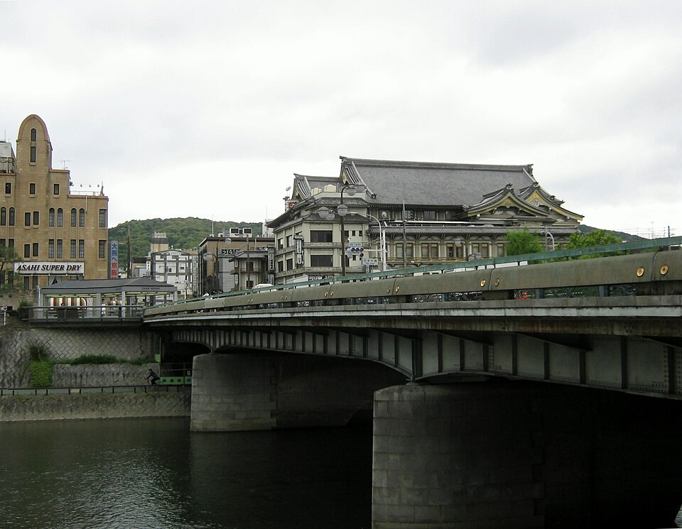
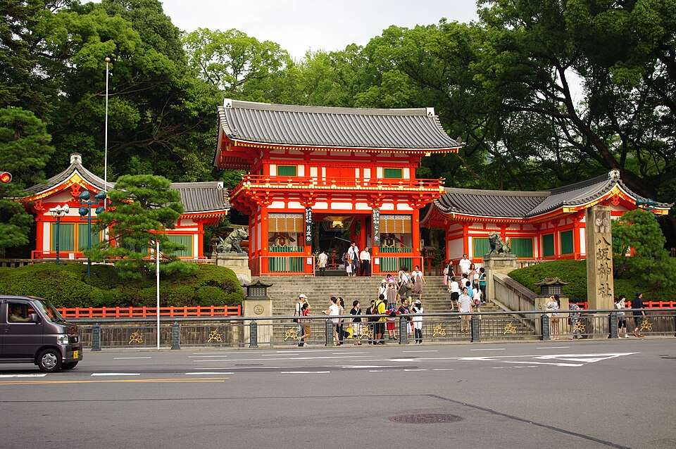
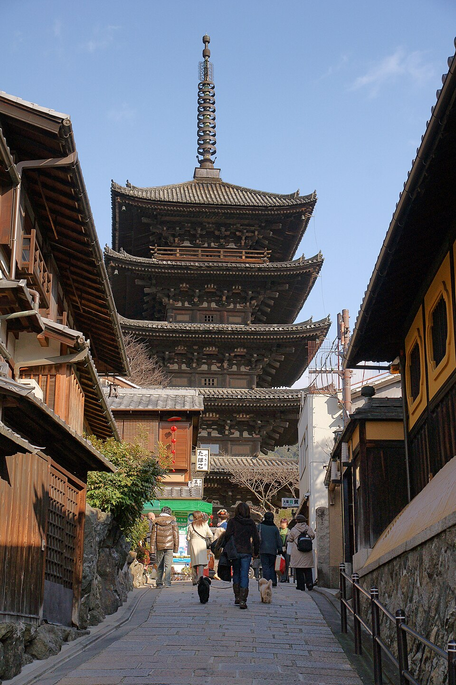
- 어디서 타나요? 한큐 교토 가와라마치역 지상으로 나오면 빈 택시가 줄지어 서 있습니다. (요금 약 1,200~1,500엔, 10분 소요 / JR 교토역 중앙출구 택시승강장에서는 약 1,500~1,800엔, 15분 소요)
- 핵심 포인트 (차완자카 길 요청): 사람들이 몰리는 메인 상점가(마쓰바라도리) 대신 바로 옆 한적한 찻사발 골목인 茶わん坂 (차완자카)로 올라가 달라고 기사님께 아래 일본어 박스를 보여주세요! 차량 진입이 허용되는 가장 높은 곳(인왕문 도보 2~3분 거리)까지 쏙 올려다 줍니다.


- ① 한큐 [교토 가와라마치역]에서 버스 탈 때 (약 10분 소요): 개찰구를 나와 노란색 6番出口 (6번 출구 · 市バスのりば 시내버스 타는 곳) 계단으로 올라오세요. 출구 바로 앞 [시조 가와라마치 E 승강장]에서 파란색/초록색 207번 버스 (清水寺·東福寺 방면)를 타고 3~4정거장 뒤인 清水道 (기요미즈미치) 또는 五条坂 (고조자카)에서 내리세요!
- ② [JR 교토역]에서 버스 탈 때 (약 15분 소요): JR 교토역 중앙출구(교토타워 방향)로 나와 오른쪽 버스 터미널 D2 승강장에서 206번 또는 86번 버스를 타고 [고조자카(五条坂)] 또는 [기요미즈미치(清水道)]에서 내리세요.


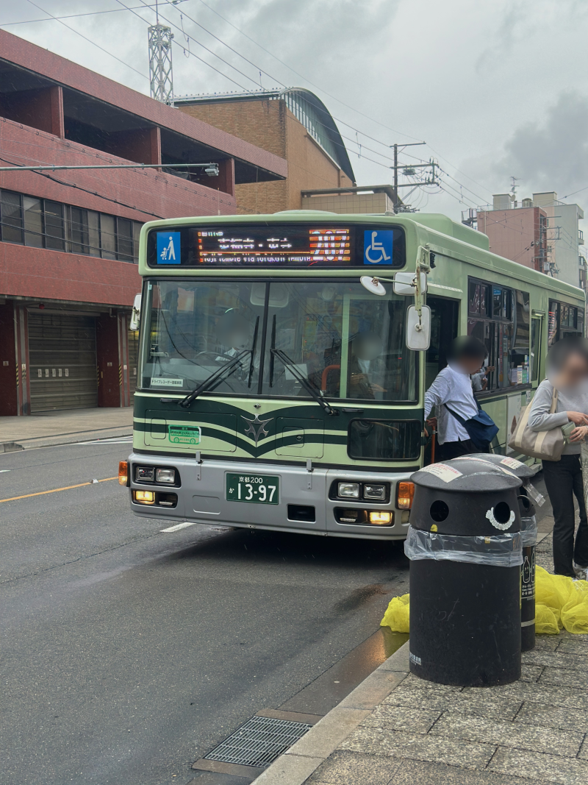
- 🎟️ 매표소 입장권 구매 (성인 1인 500엔): 청수사 매표소는 현금 결제(500엔 동전/1,000엔 지폐)만 가능하니 미리 잔돈을 챙겨두세요! 예쁜 사계절 책갈피 모양의 종이 입장권을 줍니다.
- 🏯 기요미즈의 무대(본당) ➔ 오토와 폭포: 못을 하나도 쓰지 않고 기둥 139개로 절벽 위에 세운 본당 무대에서 교토 시내와 교토타워 전망을 감상하시고, 맞은편 전망대(오쿠노인)에서 본당이 한눈에 나오는 대표 인생샷을 남기세요! 그다음 계단(또는 왼쪽 완만한 경사로)을 내려와 세 줄기 약수가 흐르는 오토와 폭포(音羽の滝)와 연못을 지나 출구로 나옵니다. (경내 관람 약 40~50분 소요)
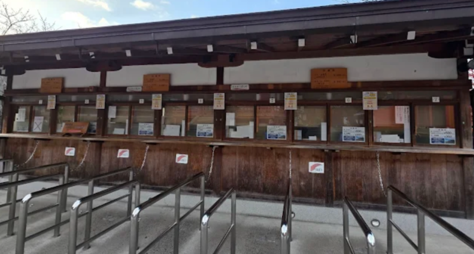


- ① 청수사 정문 앞 상점가(마쓰바라도리): 인왕문을 나와 내리막길을 따라 3분 정도 내려오며 말차 슈크림·당고·아이스크림 간식을 맛보세요.
- ② 산넨자카(三年坂 · 산네이자카) 우회전 진입: 오른쪽에 있는 [칠미가(七味家) 본포] 전통 고춧가루 가게 코너에서 오른쪽 돌계단 내리막길로 꺾어 내려가면 교토에서 가장 아름다운 전통 골목인 산넨자카입니다!
- ③ 니넨자카(二年坂) & 다다미 스타벅스: 산넨자카를 내려오면 자연스럽게 니넨자카와 5층 목조탑인 호칸지(야사카의 탑) 골목으로 이어집니다. 100년 넘은 전통 가옥을 개조한 세계 유일의 [스타벅스 교토 니넨자카 야사카차야점(다다미 스타벅스)]에서 잠시 커피 한 잔 드시며 다리를 쉬어가세요!
- ④ 야사카신사 ➔ 기온거리 ➔ 교토 가와라마치역 복귀: 니넨자카에서 평지를 따라 걸어 나오면 붉은 정문이 멋진 야사카신사와 기온거리가 나오며, 다리(시조대교) 하나만 건너면 바로 한큐 교토 가와라마치역에 도착해 우메다 숙소로 편하게 돌아오실 수 있습니다! (하산 산책 코스 총 도보 약 30~40분)
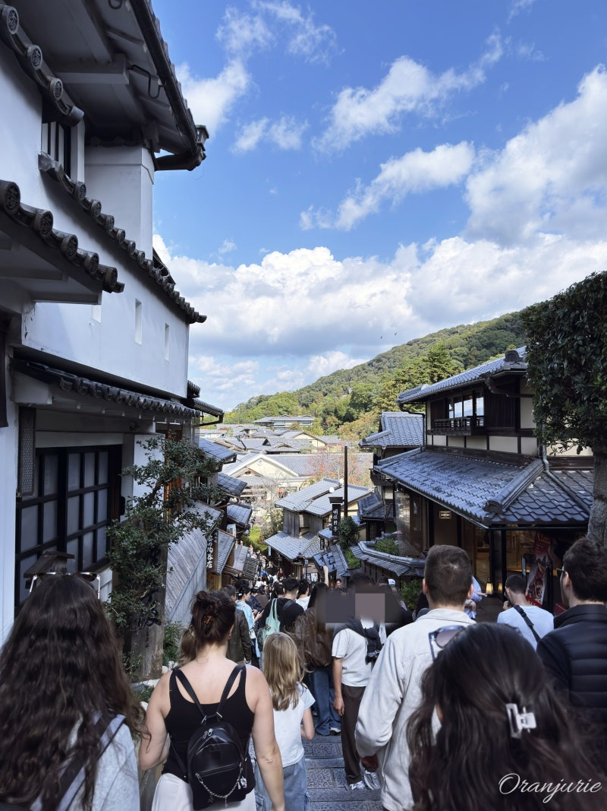
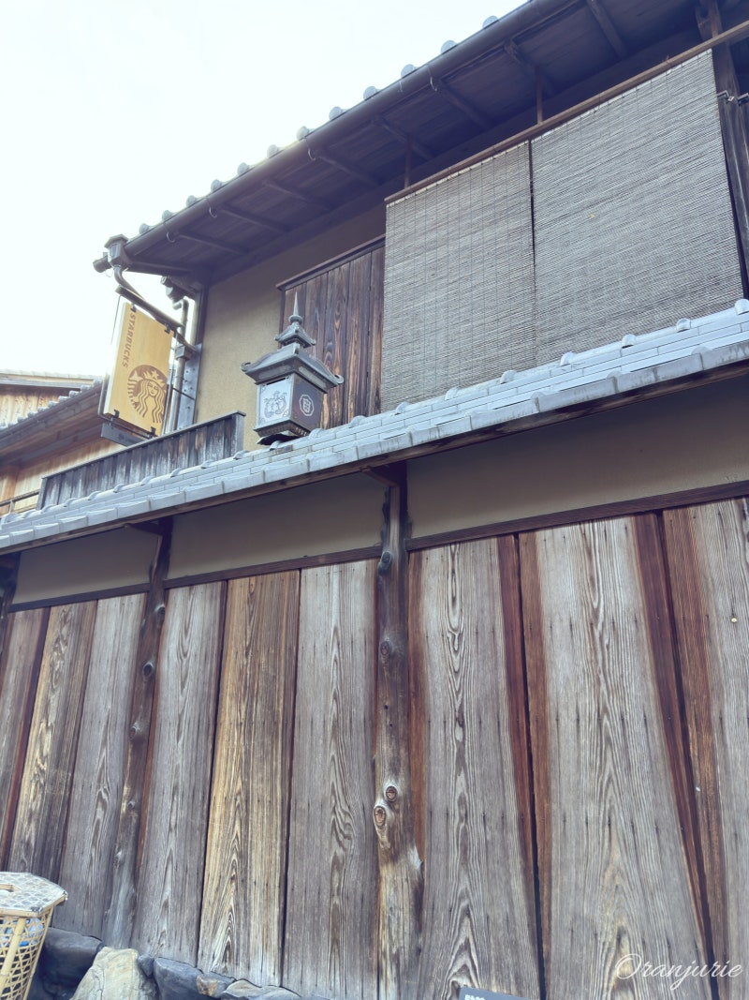

교토 관광과 저녁 식사를 마치고 숙소인 이비스 오사카 우메다로 돌아오실 때, 마지막으로 계신 위치에 맞춰 아래 한큐전철 또는 JR 신쾌속을 타시면 환승 없이 우메다까지 한 번에 돌아옵니다!
- ① 지하 입구 찾기 & 개찰구 통과: 시조대교를 건너자마자 보이는 阪急電車 京都河原町駅 (한큐 교토 가와라마치역) 지하 계단(1A·1B 출입구 또는 다카시마야 백화점 지하)으로 내려가 개찰구를 찍고 들어가세요. (아침과 동일하게 실물 이코카는 파란 IC 패드 / 트래블카드·신용카드는 은색 컨택리스 단말기 개찰구 터치 / 종이표는 매표기 410엔)
- ② 1·2·3호 선 전광판에서 빨간색 特急 (특급) 大阪梅田 탑승: 가와라마치역은 출발 시발역이라 반대 방향 열차가 아예 없습니다! 전광판에서 가장 빨리 출발하는 빨간색 [特急 (특급) 또는 準特急 (준특급) 大阪梅田(오사카우메다)행] 승강장 번호(주로 1호 선 또는 3호 선)를 보고 타시면 43분 뒤 종점인 한큐 오사카우메다역에 도착합니다.
- 💺 저녁 복귀길 부모님 꿀팁 (무조건 앉아 오기): 하루 종일 걸어서 다리가 피곤하실 때는 ① 바로 앞 열차를 보내고 다음 특급 줄 맨 앞에 미리 서서 일반석에 앉으시거나, ② 4호차 유료 지정석 [PRiVACE (+500엔)]을 타시면 우메다까지 푹 쉬면서 오실 수 있습니다!
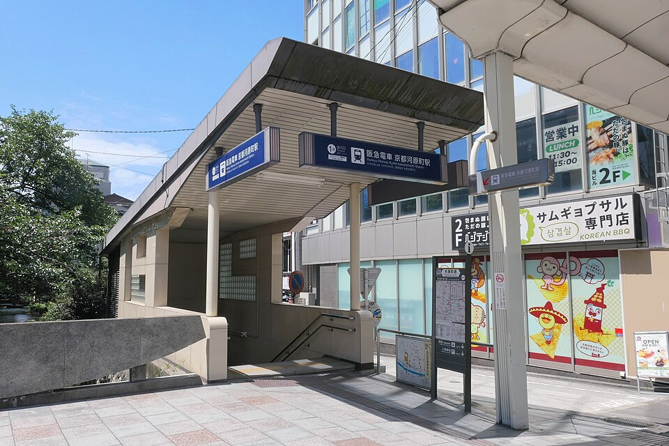
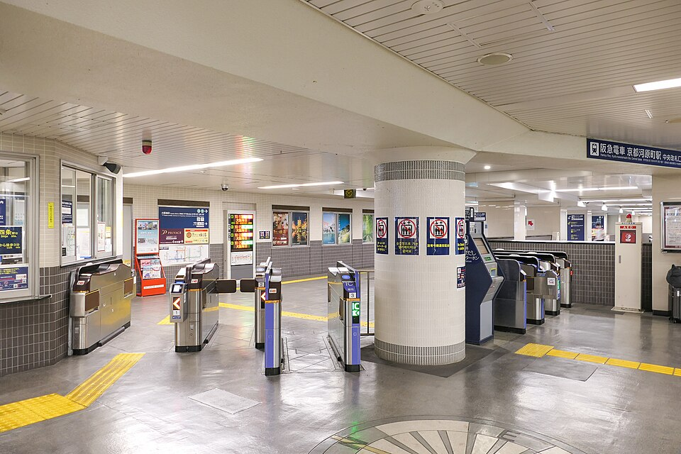
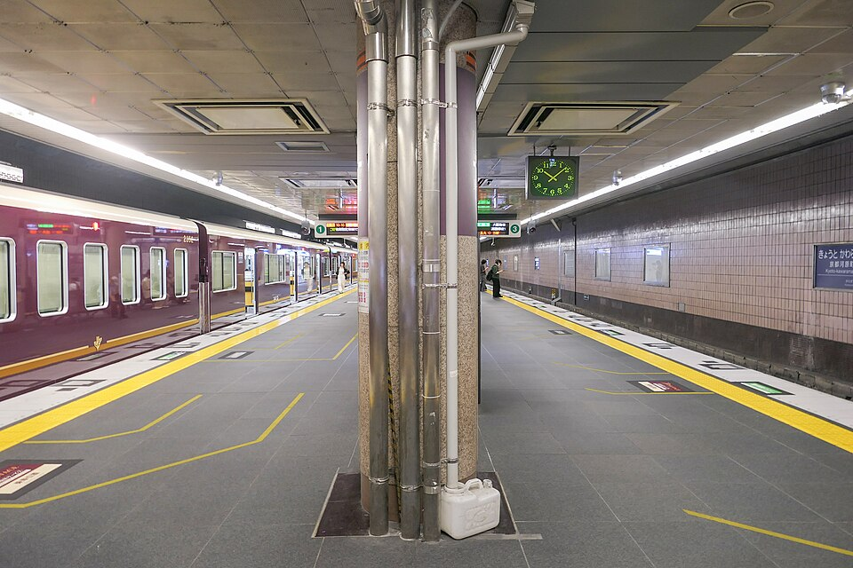
- 🎍 아라시야마에서 복귀할 때 (한큐 410엔): 한큐 아라시야마역에서 열차를 타고 3정거장(7분) 뒤 종점인 가쓰라역(桂)에 내립니다. 개찰구로 나가지 마시고 파란색 간판 ④ ⑤ 大阪梅田 (오사카우메다 방면) 승강장으로 건너가 빨간색 [特急 (특급) 오사카우메다행]을 타세요!
- 🚅 JR 교토역에서 복귀할 때 (JR 580엔 · 29분): JR 교토역 중앙개찰구(中央口)로 들어가(실물 이코카 또는 580엔 종이표 · 신용카드 터치 불가) 파란색 간판 4 · 5번 승강장 (JR京都線 新大阪·大阪·三ノ宮·姫路 方面)으로 내려갑니다. 파란색 新快速 Special Rapid (신쾌속)(행선지가 히메지·아보시·오사카 등 무엇이든 신쾌속이면 무조건 정차!)을 타면 딱 3정거장(29분) 뒤 [JR 오사카역]에 도착합니다!
- 🏨 우메다 도착 후 [이비스 오사카 우메다] 밤길 안 헤매는 법 (도보 5분):
- 지상으로 갈 때: 역 밖으로 나와 밤하늘에 빨간 대관람차가 빛나는 [HEP FIVE(헵파이브)] 건물을 찾으세요! 헵파이브 앞을 지나 큰길(오우기마치도리) 오른쪽으로 1분만 걸어가면 노란 간판의 이비스 오사카 우메다 호텔입니다.
- 지하상가(화이티 우메다)로 갈 때: 지하도에서 Whity うめだ (화이티 우메다) · 東梅田 표지판을 따라가 [7-72번 출구]로 올라가면 바로 호텔 지하 1층 입구와 연결됩니다!
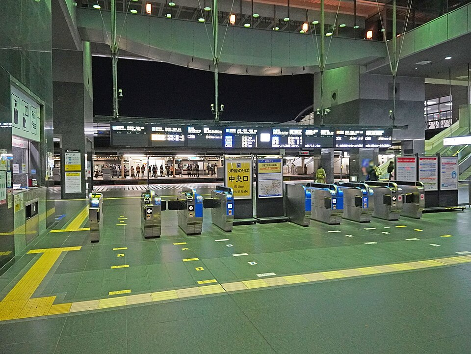
실제 우메다역에서 한큐전철·JR을 타고 교토(가와라마치·청수사·아라시야마·교토역)까지 가는 동선을 1인칭 시점으로 찍은 최신 한국어 영상들입니다. 제목이나 사진을 누르시면 유튜브로 연결됩니다!
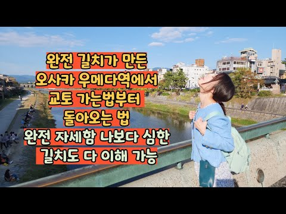
▶ 8:01 영상 보기 ▶ 14:33 영상 보기
▶ 14:33 영상 보기
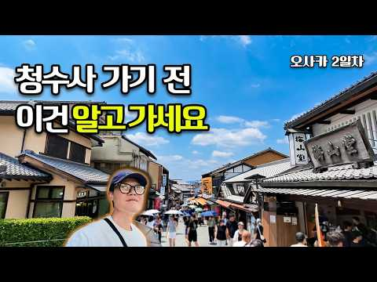
▶ 11:26 영상 보기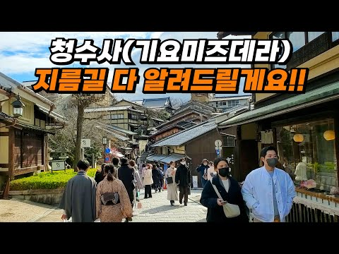
▶ 21:02 영상 보기 ▶ 5:33 영상 보기
▶ 5:33 영상 보기
 ▶ 2:13 영상 보기
▶ 2:13 영상 보기
 ▶ 4:08 영상 보기
▶ 4:08 영상 보기
 ▶ 3:46 영상 보기
▶ 3:46 영상 보기
• 한큐전철 한국어 공식 노선·운임 안내: https://www.hankyu.co.jp/global/kr/
• 한큐 4호차 PRiVACE(프리베이스 +500엔) 공식 안내 및 웹 예약: https://www.hankyu.co.jp/privace/
• 청수사(기요미즈데라) 공식 홈페이지 (운영시간 06:00~18:00): https://www.kiyomizudera.or.jp/en/
• JR 서일본 한국어 공식 노선·신쾌속 안내: https://www.westjr.co.jp/global/kr/